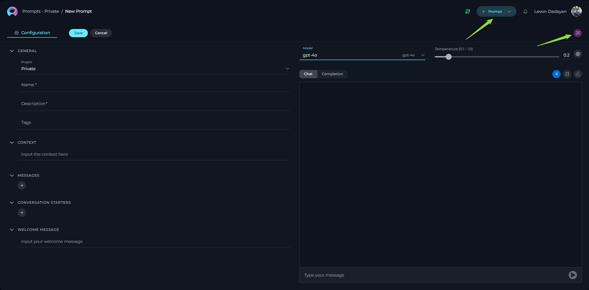
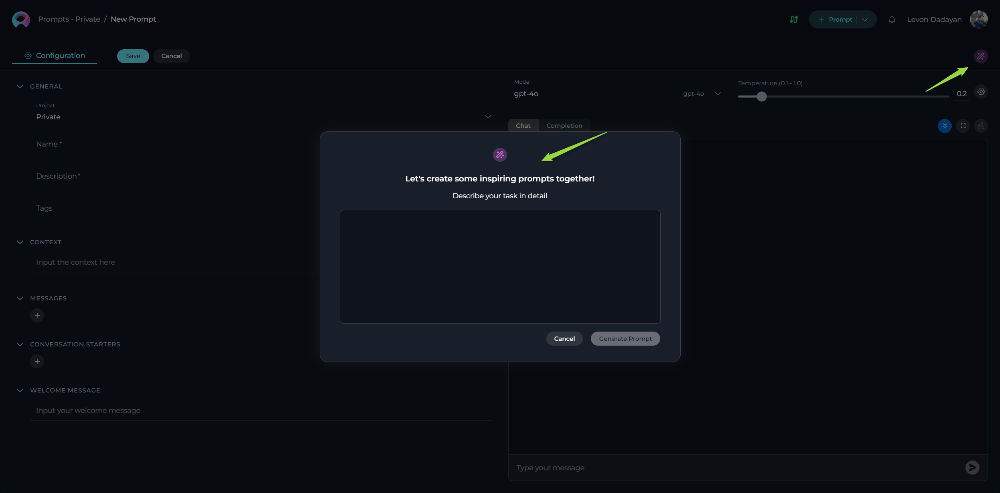
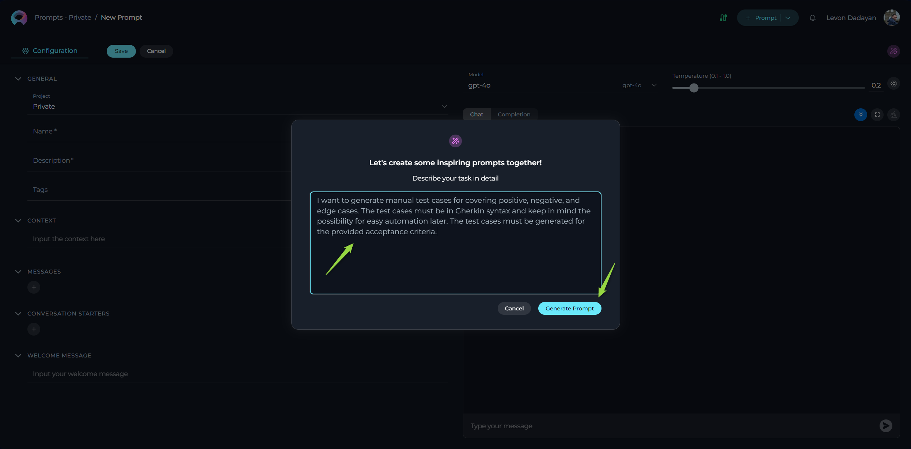
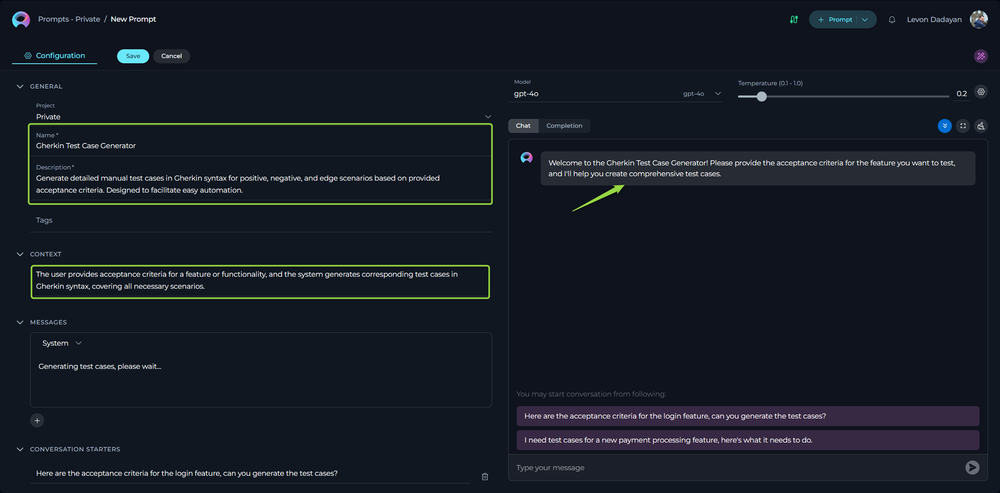

Prompt Magic Assistant: Your Guide to Effortless Prompt Creation
The Prompt Magic Assistant is an innovative feature in ELITEA designed to streamline and enhance the prompt creation process. It provides an interactive workflow that guides you in articulating your needs with precision and creativity, helping you harness the full potential of AI to develop prompts that are clear, context-rich, and tailored to your specific project requirements.
This guide will walk you through how to configure and use the Prompt Magic Assistant, providing examples and best practices to help you make the most of this powerful tool.
Accessing the Prompt Magic Assistant
The Prompt Magic Assistant is available when you are creating a new prompt. Once a prompt is created and saved, the assistant will no longer be available for that specific prompt.
To access the Prompt Magic Assistant:
- Navigate to the Prompts menu within your desired project.
- Click the + Prompt button on the top right to begin creating a new prompt. This will take you to the Configuration tab.
- On the Configuration tab, look for the "Wizard" icon. This icon indicates the availability of the Prompt Magic Assistant.
- Click the "Wizard" icon to open the assistant.

Configuring Your Prompt with the Magic Assistant
The Prompt Magic Assistant simplifies the initial setup of your prompt by generating key elements based on your description of the task.

Using the Prompt Magic Assistant:
-
Describe Your Task: Once the Magic Assistant window is open, you will see a text input field. Clearly and concisely describe the task you want the prompt to accomplish. The more detailed your description, the better the assistant can understand your needs and generate relevant suggestions.
-
Example: "I want to generate manual test cases for covering positive, negative, and edge cases. The test cases must be in Gherkin syntax and keep in mind the possibility for easy automation later. The test cases must be generated for the provided acceptance criteria."
-
Example: "You are an experienced Business Analyst tasked with creating a user story. Your goal is to generate a user story that adheres to the INVEST principles and includes proper acceptance criteria. The user story should be user-centric, facilitating effective communication and prioritization between development teams and stakeholders."
-
-
Generate Prompt Ideas: After entering your task description, click the Generate Prompt button. The Magic Assistant will analyze your input and generate suggestions for various prompt elements.

What the Magic Assistant Generates
Based on your task description, the Prompt Magic Assistant can automatically populate the following fields in the Configuration tab:
- Prompt Name: A suggested name for your prompt, reflecting the task you described.
- Prompt Description: A brief explanation of the prompt's purpose, derived from your input.
- Context: The core instructions and background information for the AI model. This is crucial for guiding the AI to generate the desired output.
- Messages (if needed): The assistant may suggest pre-defined System, Assistant, or User messages to structure the interaction flow, particularly for more complex tasks.
- Welcome Message: An optional message displayed to users when they interact with the prompt, providing additional context or instructions.
- Conversation Starter(s): Predefined text options that users can click to initiate a conversation or trigger a specific action when executing the prompt.

Review and Modify
The Prompt Magic Assistant provides a great starting point for your prompt creation. However, it's important to remember that you have full control over the generated content.
After the Magic Assistant has generated the initial prompt elements:
- Review the Generated Content: Carefully examine the suggested Prompt Name, Description, Context, Messages, Welcome Message, and Conversation Starters.
- Modify as Needed: You can freely edit any of the generated fields to refine the prompt according to your specific requirements. This includes:
- Adjusting the wording for clarity.
- Adding more specific instructions to the Context.
- Modifying or adding new Messages.
- Customizing the Welcome Message for your users.
- Adding or editing Conversation Starters.
- Add Tags: Don't forget to add relevant Tags to categorize your prompt for easy searching and organization.
- Save Your Prompt: Once you are satisfied with the configuration, click the Save button to finalize the creation of your prompt.
Examples of Using the Prompt Magic Assistant
Example 1: Generating Test Cases
- Provided Task: "I want to generate manual test cases for covering positive, negative, and edge cases for a login feature. The test cases should include steps, expected results, and test data. Consider scenarios for valid and invalid credentials."
- Possible Magic Assistant Output:
- Prompt Name: Generate Login Test Cases
- Prompt Description: Generates manual test cases for the login feature, covering positive, negative, and edge cases.
- Context: "You are a test engineer tasked with generating manual test cases for a login feature. The test cases should include clear steps, expected results, and relevant test data. Consider scenarios for valid and invalid credentials, including edge cases like incorrect password formats and locked accounts."
- Conversation Starters: "Generate test cases for the login feature."
Example 2: Creating a User Story
- Provided Task: "As a user, I want to be able to save my search preferences so that I don't have to re-enter them every time I visit the website."
- Possible Magic Assistant Output:
- Prompt Name: Create User Story for Saving Search Preferences
- Prompt Description: Generates a user story for the ability to save search preferences.
- Context: "You are a product owner responsible for writing user stories. Generate a user story for the following need: 'As a user, I want to be able to save my search preferences so that I don't have to re-enter them every time I visit the website.' Ensure the user story follows the standard format and includes clear acceptance criteria."
- Conversation Starters: "Generate acceptance criteria for this user story."
Best Practices for Using the Prompt Magic Assistant
- Be Specific in Your Task Description: The more details you provide in your initial description, the more accurate and relevant the assistant's suggestions will be.
- Focus on the Desired Outcome: Clearly state what you want the prompt to achieve.
- Use Action Verbs: Start your task description with action verbs like "generate," "create," "summarize," "translate," etc.
- Review and Refine: Always review the generated content and make necessary adjustments to ensure it aligns perfectly with your needs.
- Don't Hesitate to Modify: The Magic Assistant is a starting point. Feel free to completely rewrite any of the generated fields if needed.
- Add Tags for Organization: Utilize tags to categorize your prompts, making them easier to find and manage in the future.
By following these guidelines, you can effectively leverage the ELITEA Prompt Magic Assistant to significantly simplify and enhance your prompt creation workflow, leading to more effective and efficient AI interactions.